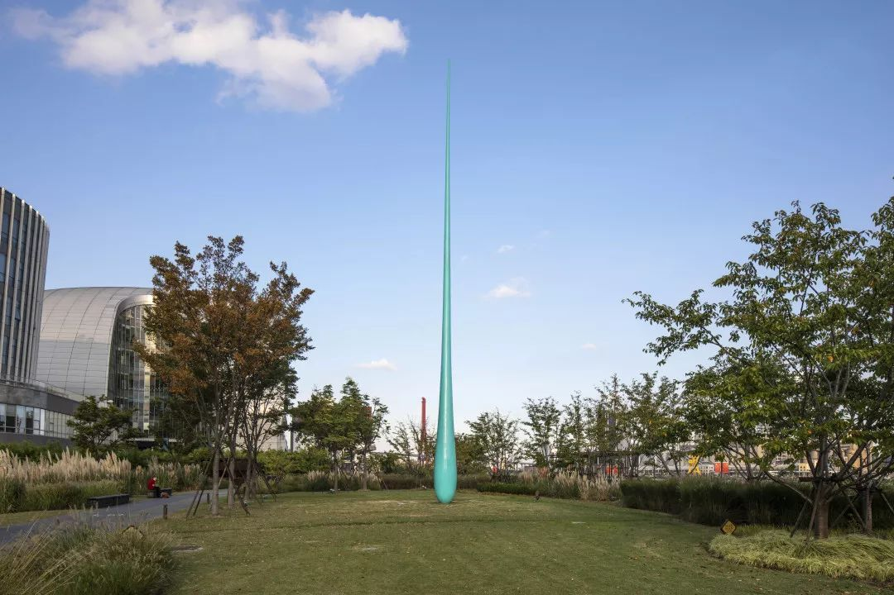
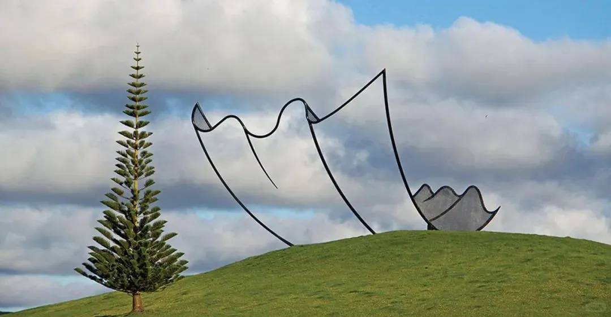

作品详情
天外之物
作品《天外之物》选择了从天而降的雨滴造型，造型抽象、安静、纯粹，从自然的形态中抽离出来，同时与艺术家的重要作品《迹象》及个人艺术语言相关。单纯抽象的雨滴形态，会让人感受到自然与生活及艺术的密切关联，人们在当今快速工作生活之余，体会艺术带来的轻松、愉悦的感觉。
艺术家
刘建华
创作年份
2019
位置
杨浦滨江渔人码头
分类
雕塑类艺术品
尺寸
高2000cm
设计细节与材料
材质：不锈钢、夜光漆、镭射灯，作品的颜色采用荧光材料。
展示场景：通过光能的作用，使人们在晚上也能看到该艺术作品的形态，在造型顶端置放一个激光灯，晚上激光灯直射天空，长长的激光射线让人感受到雨滴造型似从天而降。
天算
余晨星的《天算》是一件高 9 米的不锈钢雕塑作品，以不断向天空延伸并缩小的算盘为造型，像梯子或台阶。该作品获得第七届 "刘开渠奖" 国际雕塑大展金奖，创作历时半年，传递出 "天问" 的意象，给观众留下想象空间。

艺术家
余晨星
创作年份
2018
位置
芜湖
尺寸
9米
设计细节与材料
材质：金属
展示场景：向上延伸并逐渐缩小的算盘造型仿佛一架梯子，也像通往空中的一道台阶直插云霄。
意象：指向天空的造型传递出"天问"的意象，他希望作品带给观众想象的空间，能够在互动中产生不同的解读。
地平线
尼尔·道森的《地平线》是一件大型户外雕塑作品，以不锈钢管构成镂空立方体框架，通过光影变化呈现虚实交织的视觉效果，兼具空间穿透性与几何美感。该作品常设于城市公共空间，如新西兰基督城机场等地，成为连接环境与观者的标志性景观。
艺术家
尼尔·道森
创作年份
2014
位置
新西兰吉布斯农场的最高点上
尺寸
高达15米
设计细节与材料
材质：不锈钢材质
展示场景：是一件从公路上可以直接看到的艺术品。平坦开阔的山坡上，飘落了一片被风吹起的超大型"纸张"，钢制的简单线条在三维环境中营造出一种二维的错觉，仿佛突破了次元壁。雕塑中间的透明镂空部分令环境成为了它的画布，将艺术和生态进行了完美结合，从不同角度、不同时间观看都能获得焕然一新的体验。感觉"那张纸"下一秒就要被风吹走。